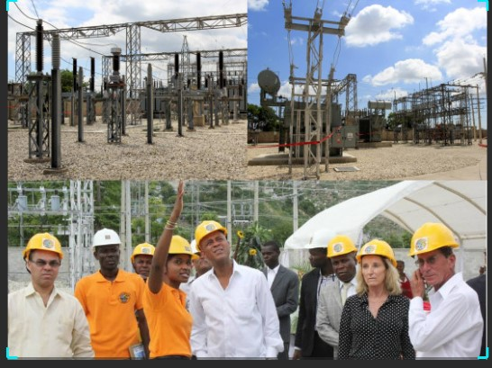
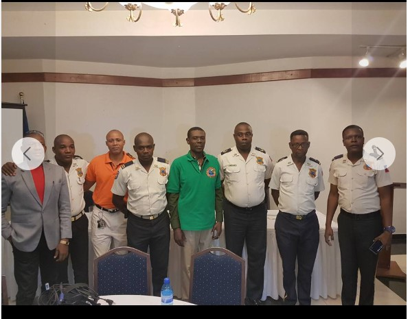
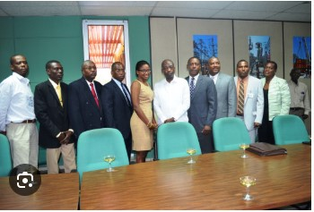

Biography
I was born in the vibrant coastal town of Cabaret, Haiti, in 1967. Growing up, I was fascinated by the intricacies of machines and systems. My journey in electromechanical engineering began with a desire to contribute to Haiti's development...
> > >